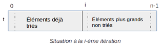

Tri par sélection¶
Principe¶
On commence par rechercher le plus petit élement du tableau puis on l’échange avec le premier élement. Ensuite, on cherche le deuxième plus petit élement et on l’échange avec le deuxième élément du tableau et ainsi de suite jusqu’à ce que le tableau soit entièrement trié.
Voir une animation à cette adresse
Algorithme et exemple d’implémentation en python¶
On peut formaliser l’algorithme du tri par sélection avec la procédure décrite ci-dessous.
Note
Contrairement à une fonction, une procédure ne renvoit rien et modifie généralement ses arguments.
procedure tri_selection(t)
t: tableau de n éléments (t[0..n-1)
Pour i allant de 0 à n-2:
idxmin = i
Pour j allant de i+1 à n-1:
Si t[j] < t[idxmini]:
idxmini = j
Echanger t[i] et t[idxmini]
Travail:
Appliquer cet algorithme à la main sur le tableau
t = [3, 4, 1, 7, 2].donner une implémentation possible en python de cet algorithme et tester.
def echange(t, i, j):
"""
Permute les éléments situés aux index i et j du tableau t
t: tableau non vide
i, j: entiers dans l'intervalle [0, len(t)-1]
"""
tmp = t[i]
t[i] = t[j]
t[j] = tmp
def tri_selection(t):
"""
trie par ordre croissant les éléments de t
"""
n = len(t)
#Compléter le code
Pour tester votre code, exécuter la séqunce suivante:
t = [5, 6, 1, 1, 15, 0, 4]
tri_selection(t)
assert t == [0, 1, 1, 4, 5, 6, 15]
Validité de l’algorithme¶
La situation au \(i^{ème}\) tour de boucle peut être représentée de la manière suivante:
{kind=link}
Tous les éléments d’indice compris entre 0 et \(i-1\) inclus sont triés et ils sont tous inférieurs ou égaux aux éléments de la partie non triée, entre \(i\) et \(n-1\).
Il s’agit d’un invariant pour l’algorithme tri_selection.
La terminaison est assurée car l’algorithme fait intervenir deux boucles bornées (boucle for).
Complexité¶
Le contenu de la boucle interne prend un temps d’exécution constant. Evaluons le nombre de fois qu’elle est exécutée.
Pour \(i=0\), elle est exécutée \((n-1)-(0+1)+1=n-1\) fois. Pour \(i=1\), elle est exécutée \((n-1)-(1+1)+1=n-2\) fois. Si on généralise, le nombre d’exécutions de la boucle interne est:
Cette somme correspond à la somme des termes consécutifs d’une suite arithmétique, dont la valeur pour \(n>1\) est donnée par:
Pour une taille \(n\) très grande de l’entrée, le terme en \(n^2\) devient prépondérant. En d’autres termes, le nombre d’opérations effectuées, donc le temps d’exécution, est proportionnel à \(n^2\).
La complexité du tri par sélection est quadratique.
Application directe¶
En supposant que le tri par sélection prenne un temps directement proportionnel à \(n^2\) et qu’un tri de 16000 valeurs nécessite 6.8 s. Calculer le temps nécessaire pour le tri d’un million de valeurs avec cet algorithme.
Exercice: temps d’exécution¶
Pour mesurer le temps d’exécution d’un programme, on importe la fonction time du module time. Cette fonction renvoie le temps en secondes écoulé depuis le \(1^{er}\) janvier 1970.
Le code qui suit permet par exemple d’afficher le temps pris par l’exécution du tri d’un tableau.
from time import time
top = time()
tri_selection(t)
print(time() - top)
On souhaite comparer les temps d’exécution des tri sélection et insertion sur deux types de tableau: un tableau de nombre au hasard et un tableau de nombres déjà triés. On reprend le code des fonctions de tri du cours.
Construire un tableau de 3000 entiers pris au hasard entre 1 et 10000, bornes comprises. Mesurer le temps d’exécution du programme de tri sélection et de tri insertion pour trier ce tableau. Attention: il faut reconstruire le tableau entre les deux tris. Quel commentaire peut-on faire concernant les deux résultats ?
Construire un tableau de 3000 entiers de 0 à 2999, bornes comprises. Mesurer le temps d’exécution du programme de tri sélection et de tri insertion pour trier ce tableau. Quel commentaire peut-on faire concernant les deux résultats ?
Mesurer sur un tableau de 100000 entiers, choisis de manière aléatoire entre 1 et 100000, le temps d’exécution de la méthode
sort()de python. Syntaxe:t.sort(). Commentez.